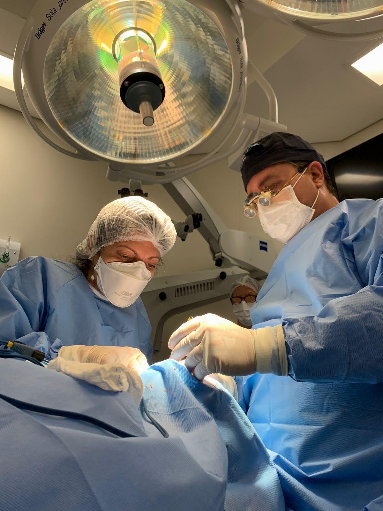

WhatsApp +55-11-95050-2015
Consultas,
horários, agendamentos e teleconsultas
Tel (BRASIL): +55-11-5579-8370
CV / Curriculo
LATTES
Services:
Expert Opinions on Cataract Surgery
Comprehensive Eye Health Assessments
Integrative Medicine Consultations
Telemedicine Appointments
Telemedicine Focus
I leverage cutting-edge technology to provide seamless
telemedicine services, enabling patients to access expert
advice and care from the comfort of their homes.
Whether you need guidance for cataract surgery or
personalized wellness strategies, I'm just a click away.
WhatsApp +55-11-95050-2015
Telemedicine / Telehealth and Remote Medical Second Opinions


